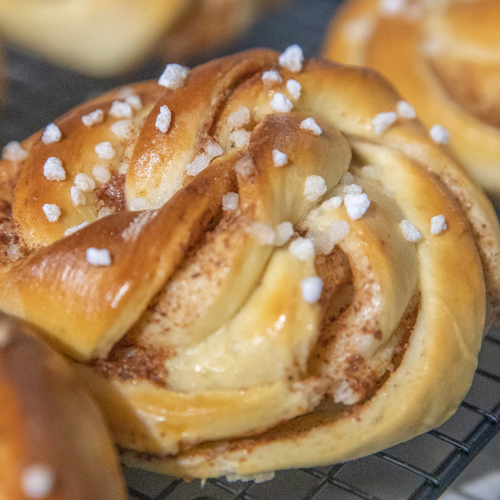

Diplômée d'un CAP Pâtisserie depuis 2012, Lucie Ditée est passée par les grandes tables Parisiennes comment la tour d'Argent ou le Ritz. Issues d'une famille travaillant dans les métiers de la bouche, elle a su mélanger ces différents horizons pour proposer une carte originale et de qualité.

Brioche cannelle ou Kanelbulle
La kanelbulle (que l'on pourrait traduire par « brioche à la cannelle ») est une viennoiserie provenant de Suède mais également présente dans le reste de l'Europe du Nord, en Alsace-Moselle sous le nom de Schnäggekueche et connu en Amérique du Nord sous le nom de cinnamon rolls.
Macarons
Le macaron est une mignardise française à l'amande, granuleux et moelleux, à la forme arrondie, d'environ 3 à 5 cm de diamètre, dérivé de la meringue.
Il est fabriqué à partir d'amandes concassées, de sucre glace, de sucre et de blancs d'œufs, la quantité d'amande devant être égale à la quantité de sucre glace (ce qu'on appelle le tant pour tant).
Lunette de Romans
La lunette de Romans est un sablé pâtissier fourré originaire de Romans-sur-Isère qui a la forme d'un ovale aux bords dentelés et recouvert de sucre glace.
Opéra thé matcha
L'opéra est une pâtisserie française constituée d’une succession de biscuit Joconde, de ganache au chocolat et de crème au beurre au café.
Muffins banane chocolat
Les muffins sont de petits gâteaux individuels s'apparentant aux madeleines. Apparus au pays de Galles aux alentours du xie siècle, ils sont très répandus dans les pays anglo-saxons. Déjà répandu aux États-Unis, le muffin est un gâteau légèrement sucré dit quickbread muffin et disponible dans plusieurs versions : au maïs, aux myrtilles, à la cannelle, aux bananes et noix, etc. Les muffins les plus connus en France sont ceux de la variété américaine.